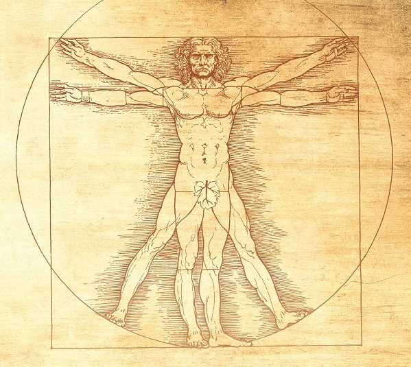

Леонардо да Винчи
Основные достижения/изобретения
Среди главных достижений Леонардо да Винчи выделяют:
Набросок велосипеда
ИЗОБРЕТЕНИЯ (реальные, и приписываемые ему по некоторым данным):
- парашют
- переносной армейский мост
- колесцовый замок для пистолета
- велосипед и др.
 Джоконда
Джоконда
КАРТИНЫ:
- Тайная вечеря
- Джоконда
- Спаситель мира
- Дама с горностаем и др.

Анотомические записи
ЗАПИСИ:
- По анатомии людей и животных, точные рисунки их строения с мелкими деталями. Он
самостоятельно вскрывал трупы и составлял свои заметки